You asked for a full pass before the home page makes its promise: contracts clean, everything readable, one identity by day and by night, and as many real variations as we can honestly claim. This is what was done, with the numbers, and what I would do next. Everything is committed; every browser sweep passes in Chromium and WebKit (15 each); 335 unit tests.
Night only existed for the quiet look. Every other look carried a fixed scheme, so Day / Night did nothing under it, and the published files ignored the mode, the palette and even the artist's accent. Now every look has its other half (a night for the day looks, a day for the night looks: the same art direction with the lights changed), Day / Night / Follow the device stands under every look, and a published page carries its colours for the first paint, both halves when the device decides, with the accent fitted. A guard holds every half to the same contrast as the look itself.
The day-and-night audit renders every template's front, a story and About, the editor, Customise, Publish, the start page and the home page in both, and checks every piece of text: 120 surfaces, 0 contrast failures.
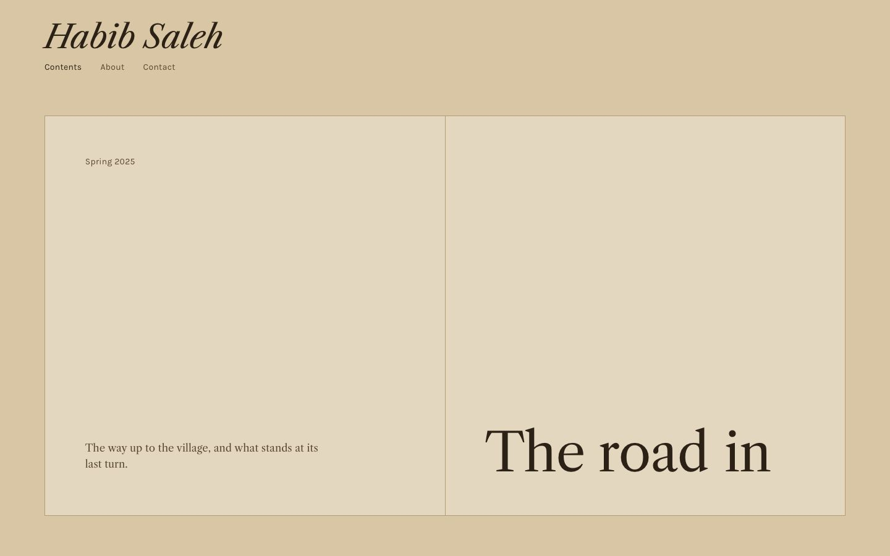
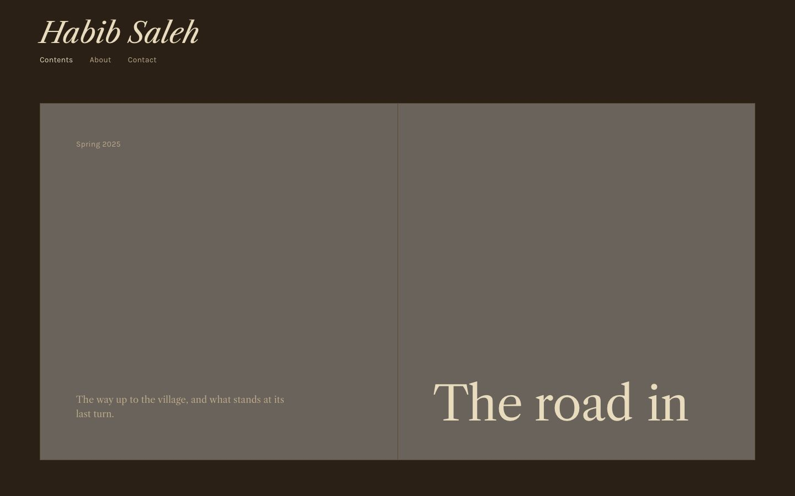
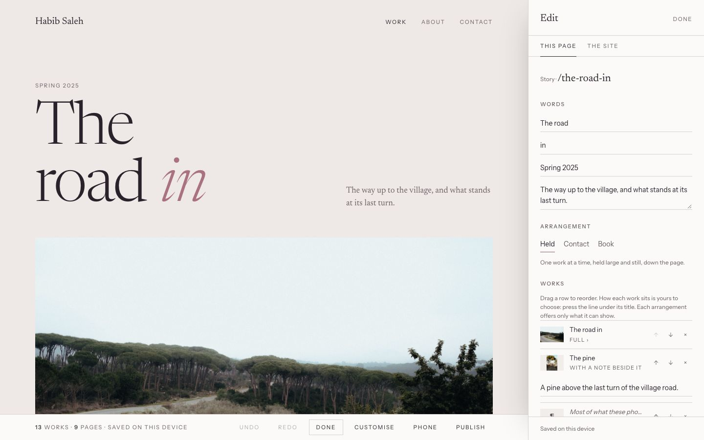
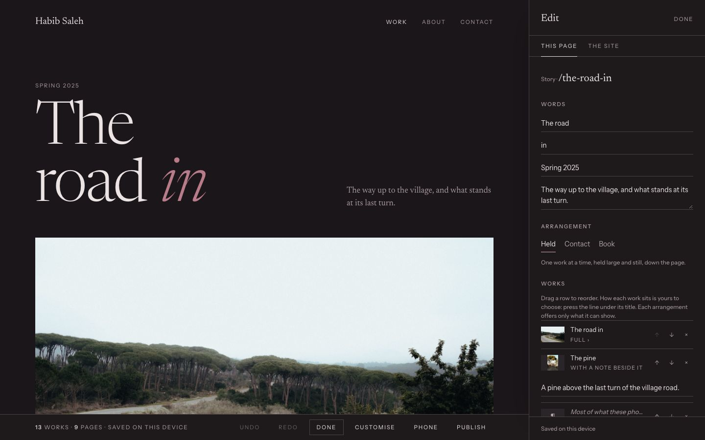
A tool now renders 24 valid combinations of each template's choices on the same page and measures how visibly different they are (mean colour distance between small renders; 0 is identical, 1 is black against white). The first honest run exposed what the number "79,328" was hiding: Folio had real range, but Monograph, Lantern and Passage barely changed with their choices. Every template now offers at least six looks (day and night natives among them) and five type pairings, and night counts. Before → after:
| Template | Median distance, before | after | Near-twins of 276 pairs, before | after |
|---|---|---|---|---|
| Folio | 0.41 | 0.47 | 0 | 2 |
| Gallery | 0.62* | 0.16 | 19 | 7 |
| Monograph | 0.04 | 0.66 | 85 | 28 |
| Passage | 0.12 | 0.12 | 45 | 13 |
| Reel | 0.38 | 0.33 | 16 | 5 |
| Salon | 0.13 | 0.66 | 7 | 4 |
| Index | 0.16 | 0.51 | 1 | 1 |
| Atelier | 0.12 | 0.21 | 6 | 2 |
| Lantern | 0.07 | 0.14 | 76 | 19 |
| Journal | — | 0.38 | — | 1 |
| Column | — | 0.42 | — | 2 |
| Catalogue | — | 0.47 | — | 2 |
| Chapbook | — | 0.19 | — | 2 |
| Cinema | — | 0.21 | — | 6 |
| Ledger | — | 0.37 | — | 4 |
| Pinboard | — | 0.25 | — | 3 |
| Studio | — | 0.42 | — | 2 |
| Archive | — | 0.37 | — | 1 |
*Gallery's first number was high only because one of its three looks was dark; with a real set of looks its true range shows, and it is one of the three that still need work: Passage, Lantern and Gallery are pages where one picture fills the screen, so the look has little to touch. Their next range has to come from choices that show on a slide, a walk and a white wall (the caption's place, the strip, the wall's grey), not from more looks. The number on the home page should be re-computed from the new lists before it is shown; it is larger now, and it is still counted before accent, palette, spacing, motion and night.
Eighteen now: two to three for every kind of artist, none a reskin. Six new front forms and one new arrangement carry them. Each one's promises are tests; every choice in every arrangement is tested to change the page.
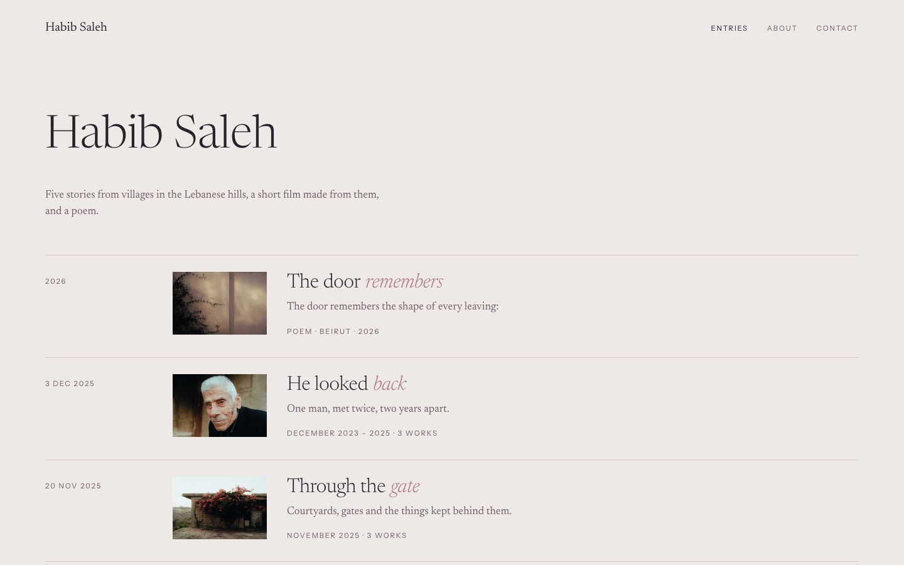
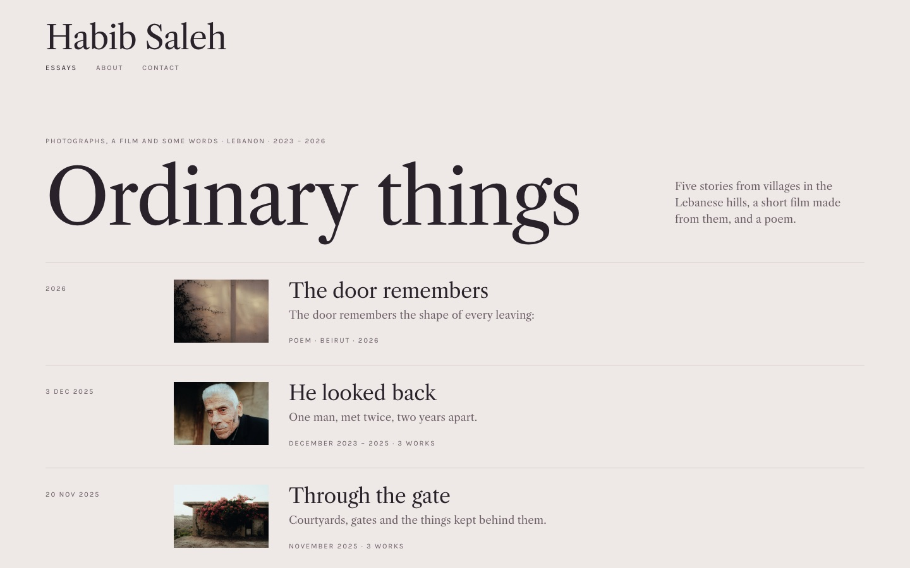
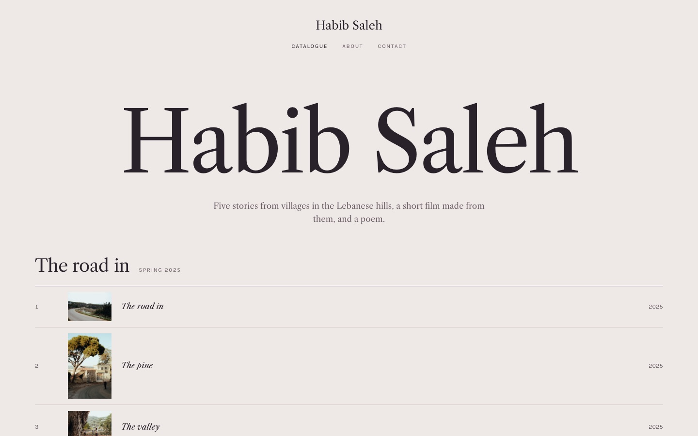
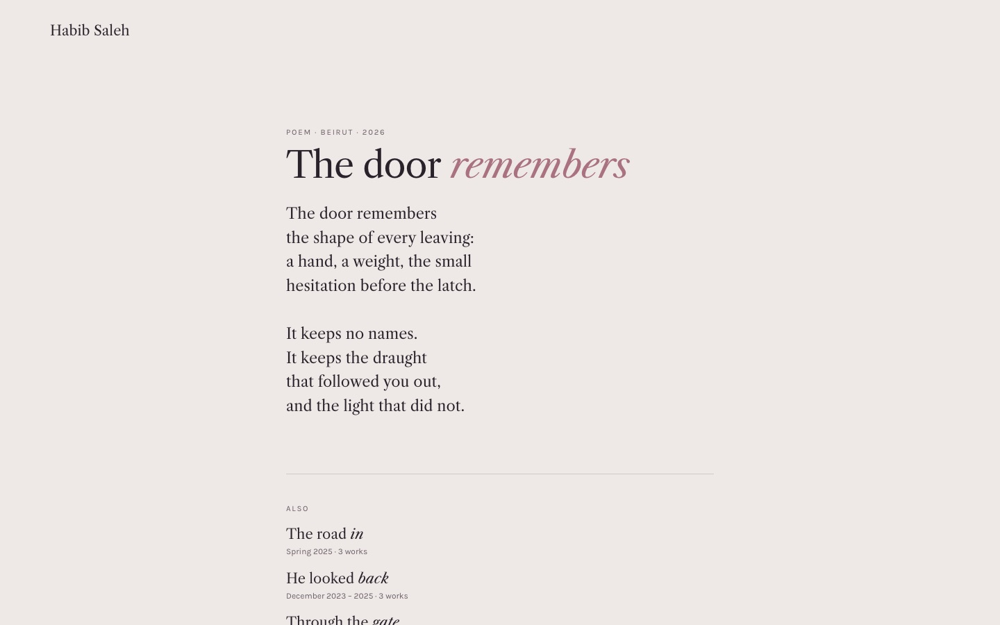
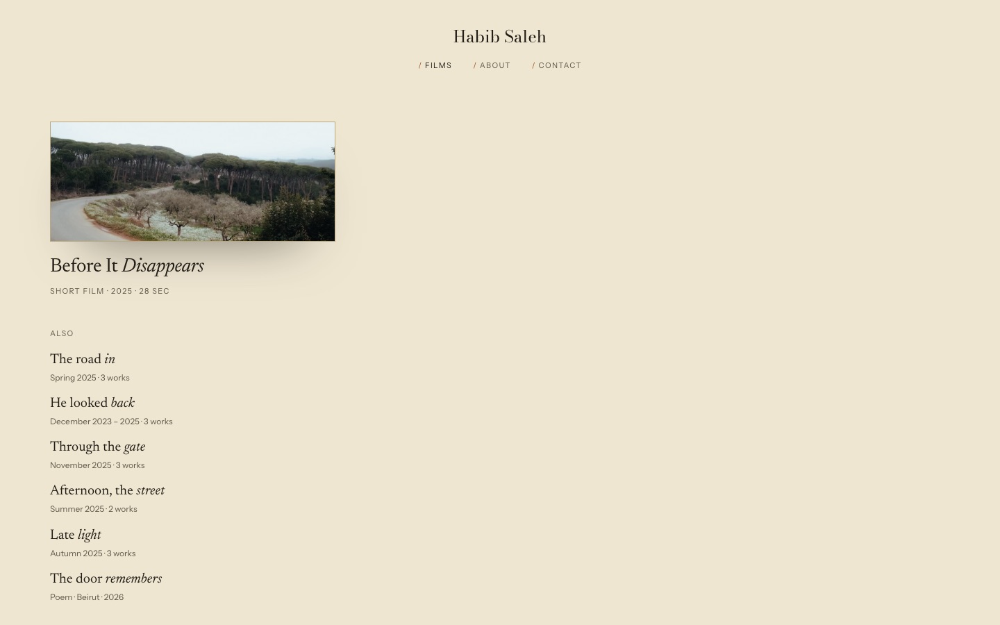
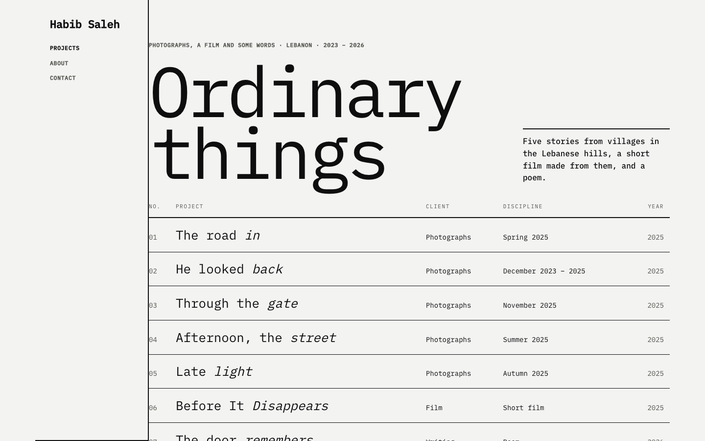
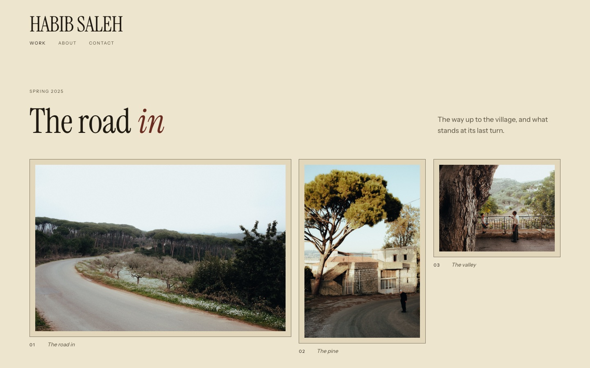
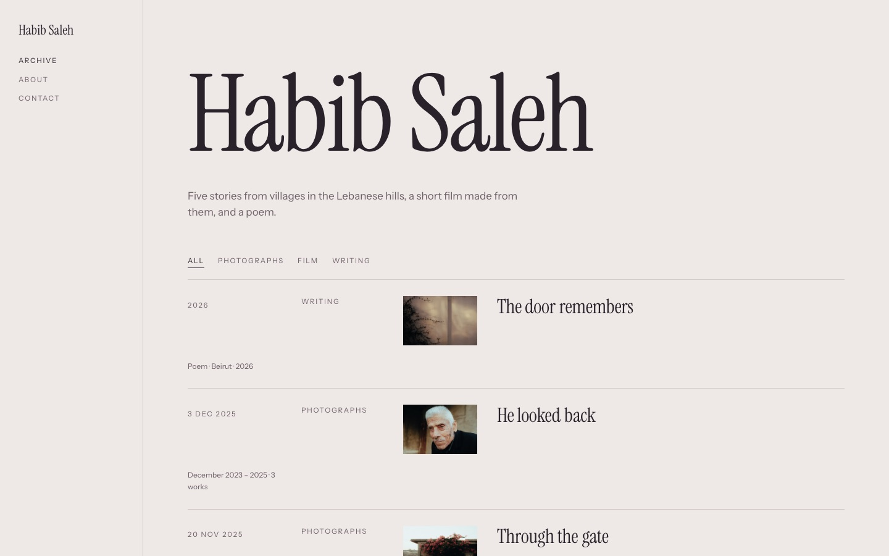
docs/CONTRACTS.md states who owns what: the document owns the work and the intent (never geometry); a template decides and never touches content; a look owns colour and voice, never layout; the artist owns every choice shown, and every choice does something; visitors are owed one identity by day and by night and honest privacy; the numbers we say must be true. Each contract names the code that keeps it and the test that holds it.